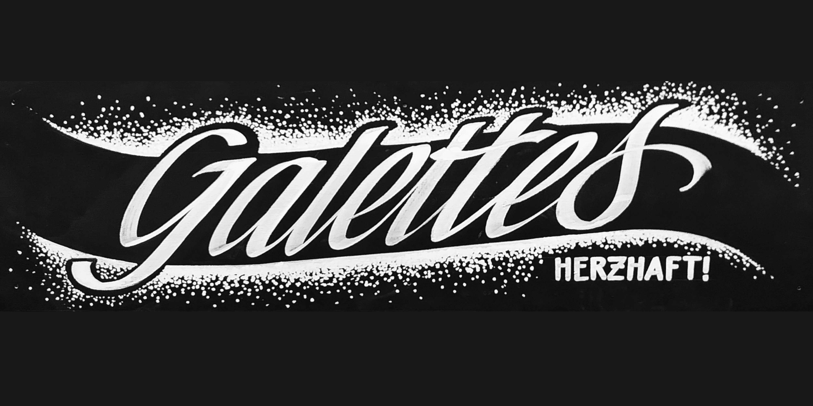

Signmaking

What tastes better than a sweet crêpe or a hearty galette on a walk through the christmas market?
I painted these signs by hand for a local food truck, so they can stand out with their handwritten signs – and delicious crepes and galettes, of course.